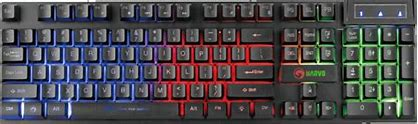
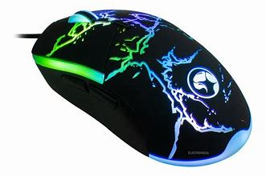
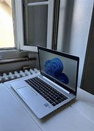
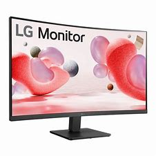

1. Keyboard: I use the Marvo keyboard, that comes in with RGB lighting, cool key pressing sounds and a pad that shows if the Caps Lock, Num Lock or the SL keys are pressed.

2. Mouse: I use the Marvo mouse, that comes with RGB lighting, amazing display, a button that can change the way the RGB is displayed,

3. Laptop: For the laptop, I use a HP EliteBook 840 5G, with a Intel Core i5 vPro 8th Generation, a 8GB of Ram, a 64-bit operating system(a windows 11).

4. Monitor: I do not have a monitor, but if I would have a monitor, I think it should be a monitor with a wide screen, with a diagonal of 29 - 32 inch, 4k optimal rezolution, the maximum rezolution of 2560 x 1440, with hdmi connecting cables and the responding time of 1 - 3 ms.

5. PC: I do not have a PC yet, but if I would have a PC, I would have it with a GPU RTX 4080 SUPER, a CPU of Intel core i7-13700K, a Deepcool AK620 CPU-Coller, with a 32 GB of ram, SSD SAMSUNG 990 PRO, a Z690 Phantom Gaming - ITX/TB4, a Corsair RM1000e, inside a Torrent Nano case.